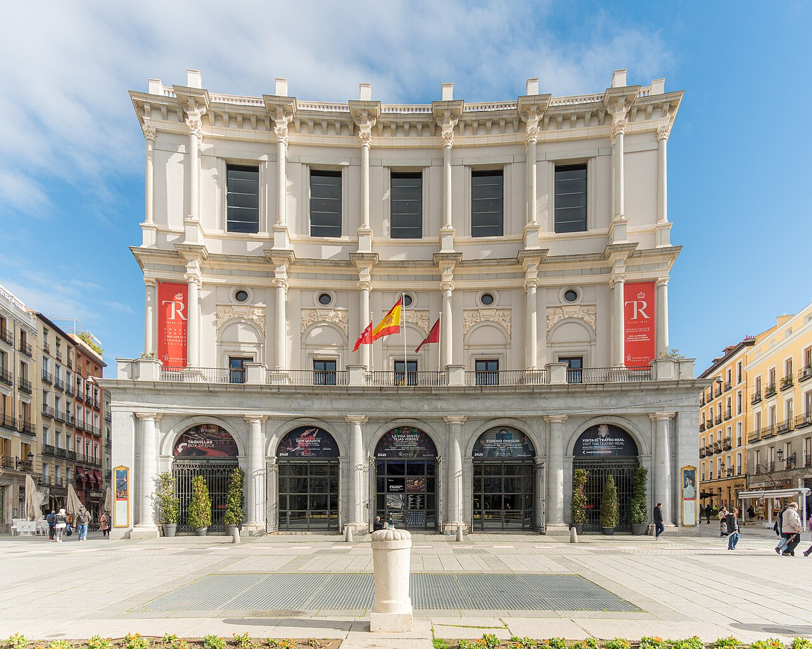
Madrid · Spain
Teatro Real
Verdi · La Traviata · Giorgio Germont
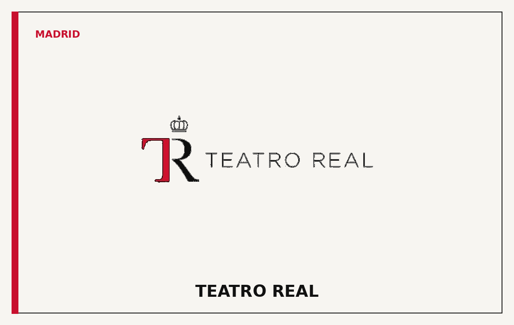
Baritone
Adrian Valente is a dramatic baritone whose repertoire moves from Verdi and Puccini to Mozart and the French grand-opera tradition. This template is designed as a complete international artist portfolio: restrained, cinematic and focused on career, repertoire and booking.
Selected career ↗A horizontal journey through the stages that define an international career.

Verdi · La Traviata · Giorgio Germont

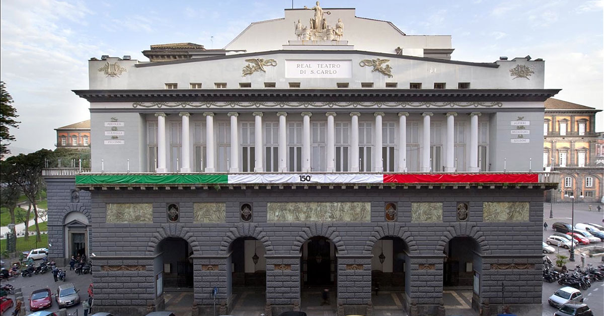
Puccini · Tosca · Scarpia
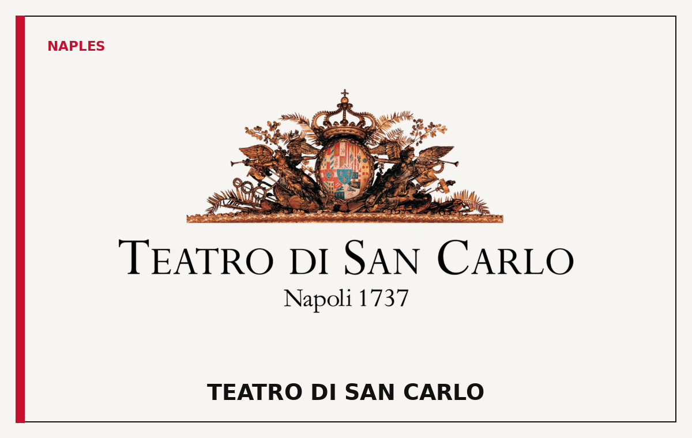
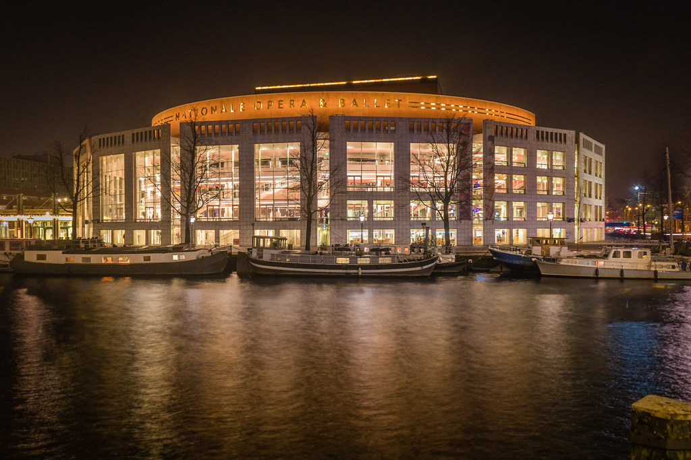
Mozart · Don Giovanni · Title role
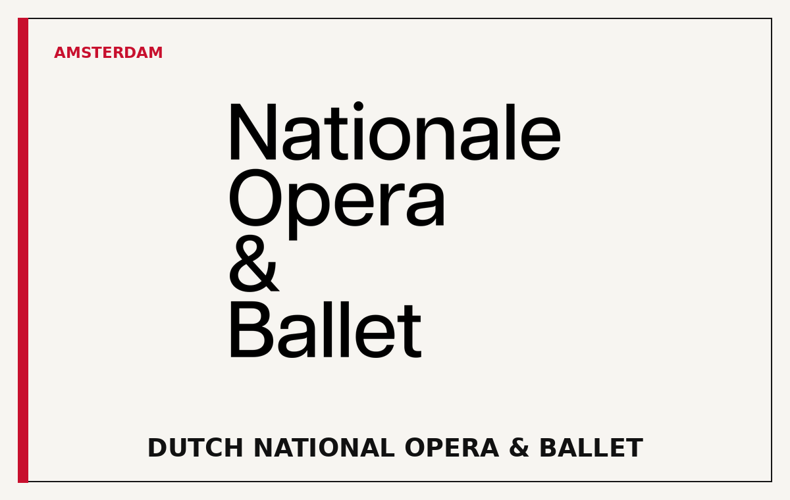
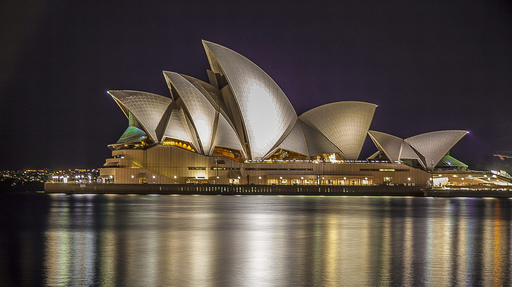
Verdi · Rigoletto · Title role
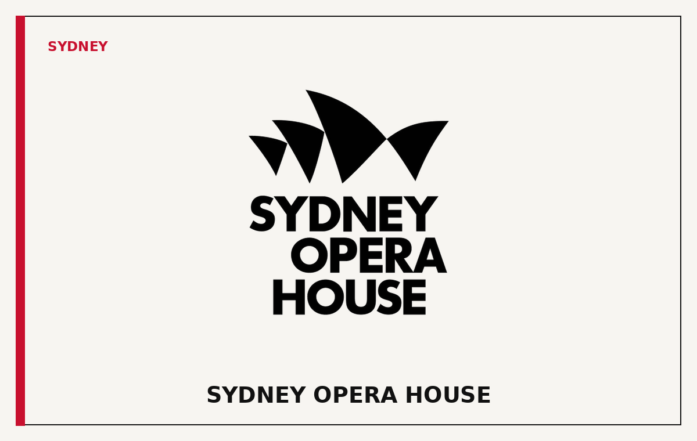
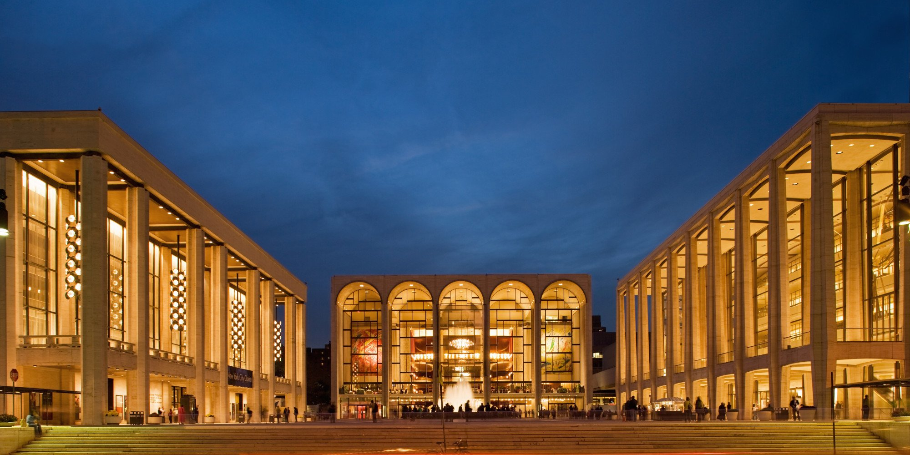
Gala appearance · Concert repertoire
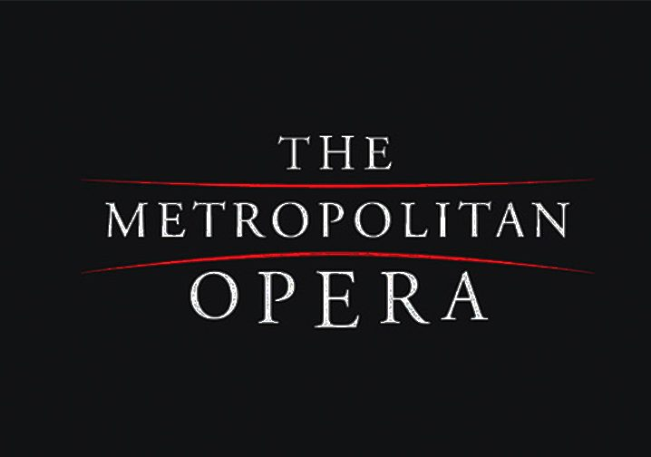
Teatro Real · Madrid
Teatro di San Carlo · Naples
Dutch National Opera · Amsterdam
Sydney Opera House · Sydney
Featured studio performance
Designed for quick scanning by casting directors and artistic administrators.
“A commanding stage presence, noble phrasing and a baritone of uncommon depth.”
— International Opera Review
“Valente combines dramatic authority with a remarkably elegant legato line.”
— Classical Stage
Press-ready imagery and editorial photography.
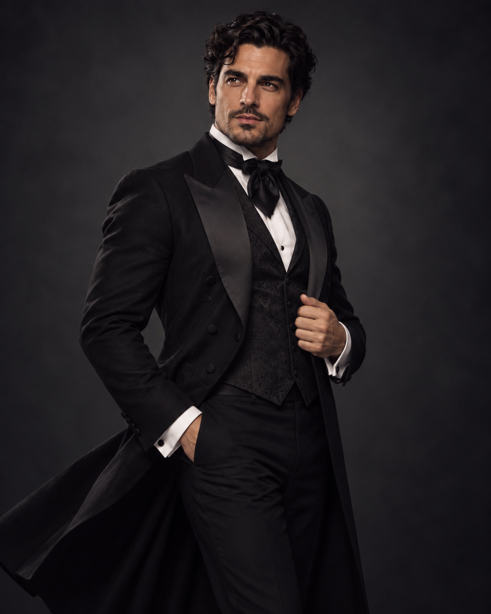
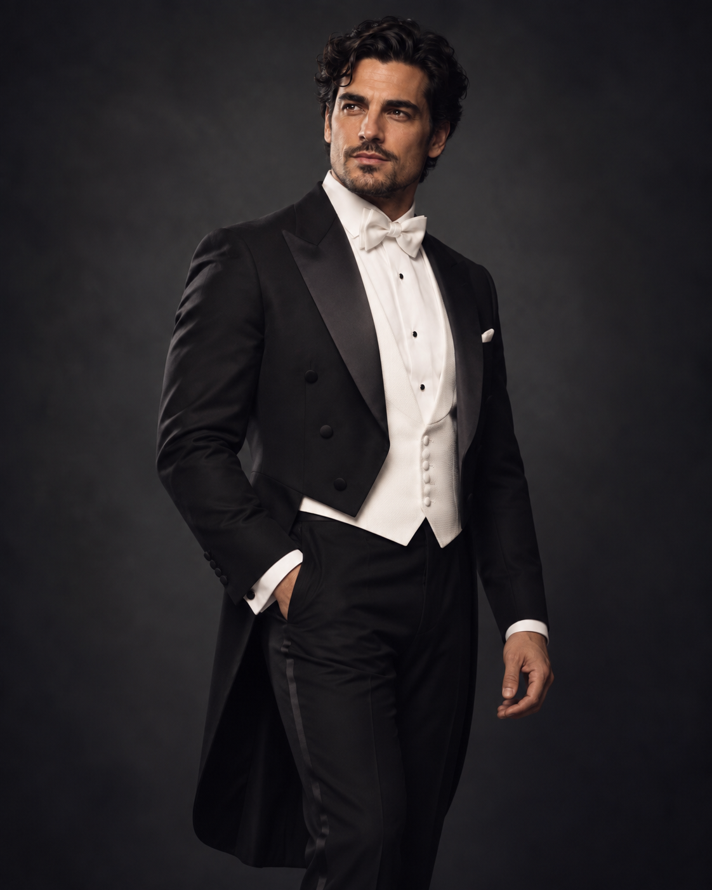